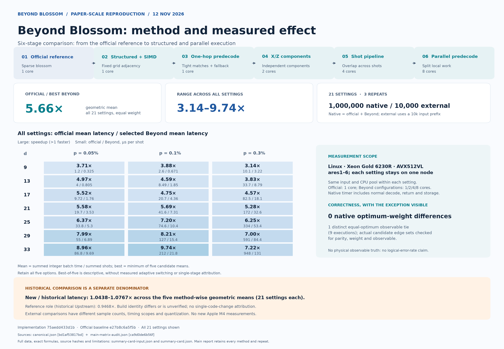
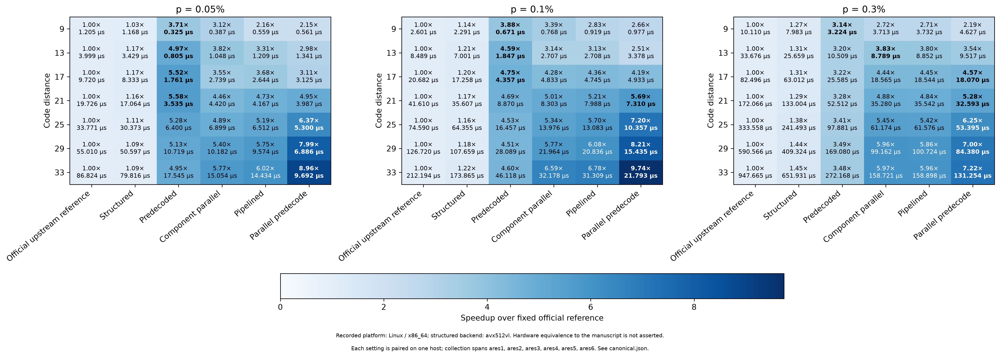
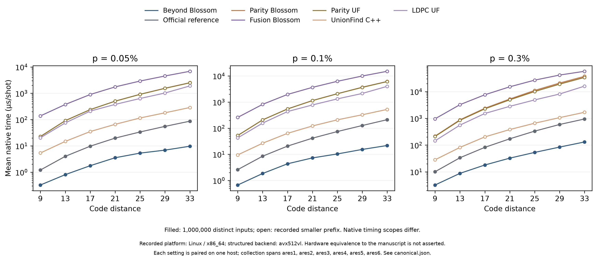
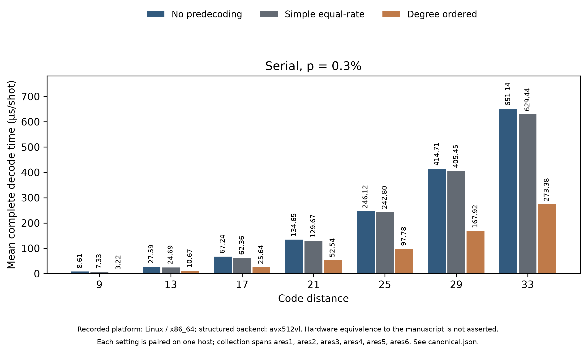
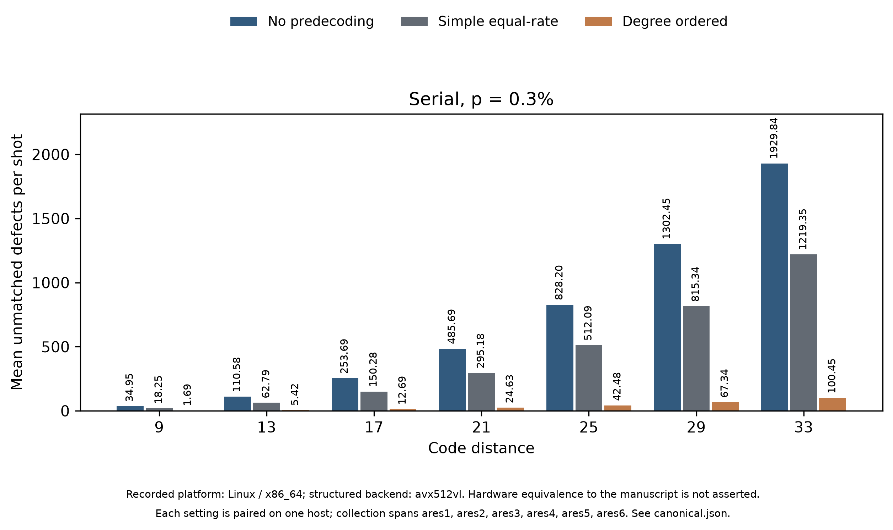

Beyond Blossom：本地论文规模复现
21 组设置在 ares1, ares2, ares3, ares4, ares5, ares6 完成。每组原生方法使用 1,000,000 条保存输入，外部方法使用相同输入的 10,000 条前缀，均重复计时三次。逐设置选择最快 Beyond 配置后，相对固定官方参考的加速比为 3.14–9.74×，几何平均为 5.66×。

表内为 Beyond / 官方参考的平均 μs/shot，括号内为参考耗时除以 Beyond 耗时。各设置在同节点、同一预定 CPU 池中依次运行，各方法按配置使用 1/2/4/8 核。
最快配置取自五种已测实现；它是逐设置的描述性选择，未测量运行时自适应切换。完整六阶段结果、每轮时间和实际配置见 CSV 与 canonical.json。
原生方法三轮批均值的最大相对跨度为 7.02%（最大值/最小值−1）。三轮用于展示重复波动，未据此给出统计显著性结论。
主矩阵的原生最优权重差为零。1 条独立输入出现等最优权重下的 observable 差异，涉及 9 次重复执行；这些差异均通过实际候选边集的奇偶、权重和 observable 验证。外部精确方法的最优权重差为零，UF 近似方法的差额保留在独立审计中。未保存物理 observable 真值，因此不据此比较逻辑错误率。
在 p = 0.3% 的串行对照中，度数顺序预解码相对关闭预解码的加速比为 2.38–2.67×。简单策略采用明确的半边等分模式 3；历史 coordinate/full-cap 模式 2 保留为独立实现。
原生计时覆盖正常解码调用、返回和结果存储；外部方法按各自原生接口计时，清理等边界存在差异。完整范围记录在每行 timing_scope，跨库曲线保留这些差异。
构建和输入生成在计时前完成。策略计数单独采集，排除统计开销；所有正式作业通过 Slurm 在 ares1–6 运行。d = 33、p = 0.3% 的独立 PMU 采集覆盖官方参考与结构化方法的 L2/L3，共四组独立计数，每组百万输入采集一遍。L2 分母为需求数据读请求，L3 分母为 LLC 读请求。
本次采集来自 Linux x86-64 / Intel Xeon Gold 6230R，结构化后端为 AVX512VL。Apple M4 仅完成已有数据重画；此归档不含新的 M4 测量。
新数据与论文历史归档分别保存。历史预解码表使用四线程 pipeline 和旧坐标顺序基线，本次采用串行模式，不能把两种口径的数值直接替换。
与历史主矩阵按设置对应后，五种 Beyond 配置的新/旧耗时比的几何平均为 1.0438–1.0767，参考角色为 0.9468。历史 CSV 的 Upstream 仅作角色对应，其构建身份未确认为本次独立官方参考。输入、构建和测量窗口不同，这些差异不能归因于单一代码改动。
独立 PMU 未命中率：misses / requests（%），d = 33、p = 0.3%。
| 缓存层级 | 官方参考 | 结构化方法 |
|---|
| L2 | 60.1571 | 27.7622 |
| L3 | 0.1158 | 0.0192 |

原生六阶段：绝对耗时与相对官方参考加速比
外部对照：实心点为百万输入，空心点为一万条前缀
三种串行预解码策略的完整解码耗时
预解码后平均剩余事件数，单独统计复现与证据
技术身份
实现与采集源码：75aedd433d1b129e5a973635320f199b5f26cbae
官方参考：e27b8c6a5f5ba10fb74d4ebb29822f2df5e12bcd
canonical SHA256：bd1af53817bd727eb23cc1385b49a21bec3ff11b96cb3b61ad6d78639c09b3c3